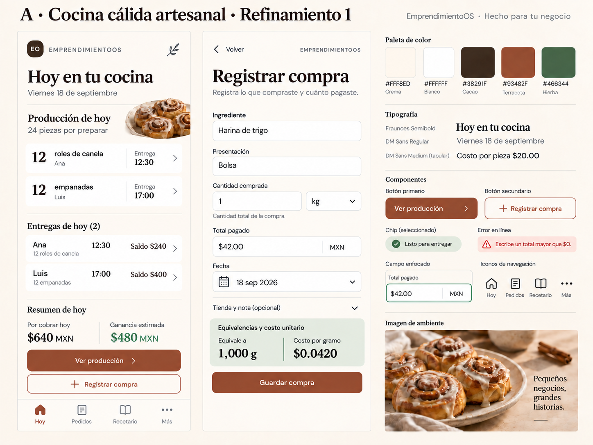

EMPRENDIMIENTOOS · PHASE 3
Cocina cálida artesanal
A seleccionada · Refinamiento 1 pendiente de aceptaciónConservamos la calidez de A. Afinamos los horarios, el tratamiento de saldos y el espacio de los campos para que el trabajo y el dinero se lean con más claridad.

¿Aceptamos esta versión como dirección visual o hay algo que ajustar antes del brandbook?